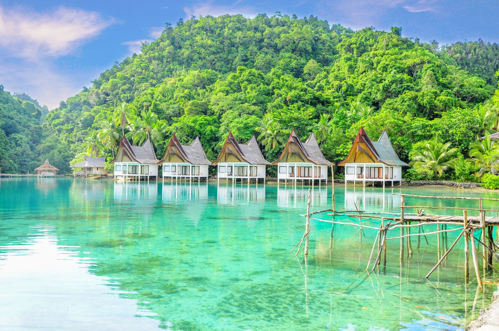

HOME Intramuros Mayon Volcano Kayangan lake Siargao
Siargao is a teardrop-shaped island located on the northeastern coast of Mindanao. It is best known for its reliable surfing conditions all year round, which have earned it the title of the "Surfing Capital of the Philippines." Thanks to its reliable surfing weather, it has become a great surfing spot for both veterans and beginners. Among its various surfing spots, Cloud 9 is considered the most popular of all. It has also gained worldwide recognition due to its thick, hollow tubes and fast-barreling right-hand waves that break over a reef. Aside from its surfing areas, Siargao Island also boasts white sand beaches, picturesque islands, azure waters perfect for snorkeling and diving, waterfalls, lagoons, and caves.
MMSU-CIT Copyright 2021 - Symon John Reyes